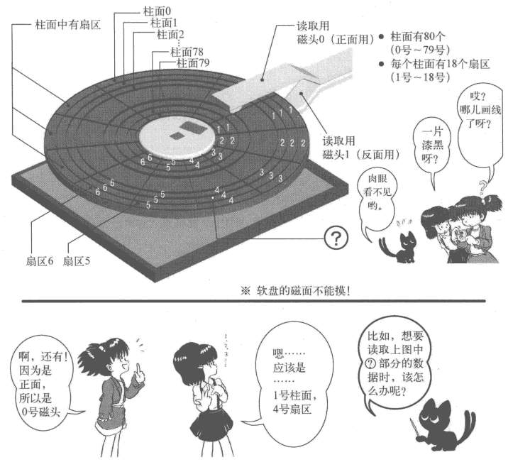

前言
本文是《30天自制操作系统》中的windows翻译为linux上的一些实践，过程中也在逐步迁移linux的源码到里面。本身作为对linux上的汇编、启动、内存管理等的一个学习实践。在30天之前都是将此工程翻译到linux，30天后将变成linux移植过程的笔记
关键词解释
- 启动区: (bootsector) 软盘第一个的扇区称为启动区。那么什么是扇区呢？计算机读写软盘的时候，并不是一个字节一个字节地读写的，而是以512字节为一个单位进行读写。因此，软盘的512字节就称为一个扇区。一张软盘的空间共有1440KB, 也就是1474560字节，除以512得2880, 这也就是说一张软盘共有2880个扇区。那为什么第一个扇区称为启动区呢？那是因为计算机首先从最初一个扇区开始读软盘，然后去检查这个扇区最后2个字节的内容。
- IPL: （initial program loader）启动程序加载器。启动区只有区区512字节，实际的操作系统不像hello-os这么小，根本装不进去。所以几乎所有的操作系统，都是把加载操作系统本身的程序放在启动区里的。有鉴于此，有时也将启动区称为IPL。但hello-os没有加载程序的功能，所以HELLOIPL这个名字不太顺理成章。如果有人正义感特别强，觉得“这是撒谎造假，万万不能容忍！＂，那也可以改成其他的名字。但是必须起一个8字节的名字，如果名字长度不到8字节的话，常要在最后补上空格。
第1天 从计算机结构到汇编程序入门
- 环境windows
- 二进制编辑器 notepad++安装hexeditor插件
- 汇编编辑器 vscode安装x86 and x86_64 Assembly
- 编译需要使用光盘中的nask编译器
1. vmware启动img
- 创建系统选择other/other
- 创建好需要添加硬件，选择软盘，然后使用文件，选择img即可启动
2. qemu启动img
1 | qemu-system-x86_64 -enable-kvm -m 4G -smp 1 -fda common/haribote.img |
第2天 汇编语言学习与Makefile入门
1. 标准FAT12软盘格式
1 | ; 以下的记述用于标准FAT12格式的软盘 |
2. 汇编代表性寄存器介绍
16位寄存器
1 | AX ---- accumulator 累加寄存器 |
8位寄存器
8位寄存器为16位寄存器的扩展，AL和AH一起代表AX，并不是单独的寄存器
1 | AL ---- accumulator 累加寄存器低位 |
32位寄存器
- 32位系统中使用的32位寄存器，低16位和上述16位相同，高16位没有寄存器名字
- 32位寄存器加
E代表，如EAX, ECX, EDX, EBX, ESP, EBP, ESI, EDI
段寄存器，16位
1 | ES ---- extra segment 附加段寄存器 |
3. CPU和内存
- CPU寄存器很少，32位也只有44个字节的空间，所以需要内存当外部储存器
- 内存和CPU使用管脚连接，速度虽然光速，但是比起来内部寄存器还是慢很多
- 程序代码储存在内存中，一条一条读取出来进行运行
0xf0000附近存在bios本身- 启动区内容的装载地址为
0x00007c00 -- 0x00007dff，为IBM和intel规定的。所以ORG指令选择此处为起始地址，也仅有512字节
4. Makefile编写
ipl.S是启动时最先执行的代码，需要编译到软盘镜像的第一个分区
1 | all: img |
第3天 进入32位模式并导入C语言
1. 软盘构成
- 一面80个柱面
- 磁盘有两面
- 每个柱面18个扇区
- 一个扇区512字节
- 一共80 * 2 * 18 * 512 = 1474560 Byte = 1440 KB
C0-H0-S1代表柱面0，磁头0，扇区1- 扇区从1开始计数，柱面从0开始计数
(1) 软盘保存文件
参考 制作FAT12软盘以查看软盘的根目录条目+文件属性+文件内容
- 使用命令保存二进制到软盘中
1 | # 生成img文件 |
1 | => hexdump -C haribote.img |
- 文件名写在
0x0002600的地方 - 文件内容写在
0x004400的地方，这个和书本上的0x004200不太一样，linux上mount后写入文件就在0x004400位置 - 编译生成的第三阶段启动程序代码在
0x004400位置
(2) 当前编译出来的软盘分布
C0-H0-S1: IPL启动区位于此扇区，操作系统启动时会自动装载到0x7c00-0x7dff，这个是iIBM和intel规定的默认行为booloader.S + header.S编译出来的kernel保存在软盘的0x004400
2. 内存寻址
ES : BX代表内存寻址的地址，其中BX为0-3位，ES为4-位。如ES=0x0820，BX=0，代表0x8200地址。总内存为12位，1M左右。- 内存
0x7c00-0x7dff为启动区使用，0x7e00-0x9fbff没有什么用，留给操作系统开发使用 - 内存寻址需要指定段寄存器DS，不然就会加上其16倍的数据，所以一般DS = 0
3. 汇编和C语言链接
- 使用汇编可以编译出
.obj（.o）文件，这个文件和C文件编译出来的是一个效果 - 可以使用
objdump来查看c语言生成的汇编指令代码 - 既然都是原生汇编，按照c语言生成的汇编格式来写汇编，同样可以链接到c语言中
1 | .code32 |
4. BIOS介绍
- BIOS是使用16位机器语言，32位模式不能调用BIOS函数
- VRAM（video RAM）在当前画面模式下是
0xa0000 ~ 0xaffff，这个是在BIOS文档中INT 0x10说明最后写着
1) BIOS函数
(1) 0x10 设置画面模式
- 设置AH寄存器为00
- 设置AL寄存器为下面的值（省略部分模式）
- 0x03: 16色字符模式，80 x 25
- 0x12: VGA图形模式，640 x 480 x 4位彩色模式，独特的4面储存模式
- 0x13: VGA图形模式，320 x 200 x 8位彩色模式，调色板模式
- 0x12: VGA图形模式，800 x 600 x 4位彩色模式，独特的4面储存模式（部分显卡不支持此模式）
- 无返回值
1 | ; 设置屏幕模式 |
5. cpu介绍
- 为什么写程序使用
i486p，这个是cpu指令集 - i486p是给486cpu使用，但是如果只是用16位寄存器，也可以8086用
- intel系列cpu家谱
1 | 8086->80186->286->386->486->Pentium->PentiumPro->PentiumII->PentiumIII->Pentium4->... |
- 到286为止是16位cpu，386之后为32位
6. 内存重新分配
- 引入C语言后，代码编译出的大小越来越大，之前的空间不足。32位模式下可用内存达到4G，重新将磁盘上的代码拷贝到内存新的地址中。
- 选择0x00100000为软盘拷贝的首地址
- 选择0x00280000为c语言代码开始位置
- 选择0x002fffff-0x003fffff为c语言栈的大小，栈设定为1MB。esp从c语言开始赋值为0x003fffff（栈顶是高地址，栈底为低地址）
1 | ; header.S文件节选 |
- 由于makefile中是直接将
cobjs加到hader后面的，所以在header.S后面的start_kernel就是c语言的起始位置
7. makefile解释
1 | INCLUDE = -I$(TOOLPATH)/haribote/ -I./include/ -I./arch/x86/include/ -I./arch/x86/include/uapi/ -I. |
- 我们需要让
start_kernel在cobjs的.text段第一个，有两个方案- 将main.o在链接的时候放到第一个位置，需要在main.c中唯一
- 使用
.text.first配合ld链接配置文件实现
- 这里使用第二个方案
1 | void HariMain(); |
- 对应的
cobjs.ld
1 | ENTRY(start_kernel) |
第4天 C语言与画面显示的练习
1. 图形化界面
2. 调色板
- 调色板是显卡的一个模块，由于颜色只有8位，也就是256色，但是正常RGB有24位
- 所以我们可以给显卡设置256种颜色，0-255分别表示一种颜色
- 在用的时候直接设置对应内存为一个号码，显卡就会直接将对应位置显示成对应的颜色
- 但是cpu中断和调色板的io存取需要使用汇编来实现，c语言无法实现
设置调色板
- 先屏蔽中断
- 将想要设置的号码（0-255）写入到
0x03c8 - 然后按照RGB的顺序写入
0x03c9，想要继续设定，就直接继续写就行了 - 想要读出来对应号码的RGB，将号码写入到
0x03c7，再从0x03c9读取3次。同理继续读就是下一个号码 - 最后恢复中断位
1 | void set_palette(int start, int end, unsigned char *rgb) { |
3. 速度问题
运行起来后，要显示有颜色的画面一直是黑屏。等待了几分钟后才显示预期画面，差点以为代码有bug。不过这么慢也是个bug
排查了很久发现，原始makefile编译出来的其实是64位的c程序，运行的时候特别慢，应该是不兼容导致的。修改了makefile的cflags和ldflags后就运行特别快了。之前就算导入了c语言，也只是hlt，看不出效果，所以没有发现
1 | CFLAGS += -m32 |
4. 使用c语言遇到的几个问题
- switch不能超过5个case，否则会出问题，不清楚为什么
- while中不能使用i–，不清楚为什么
第5天 结构体、文字显示与GDT/IDT初始化
1. 字符点阵
- 假设一个字符占用像素点为8x16，那么可以使用
char[16]表示一个字符的点阵 - 作者找其他人要了一个
hankaku.txt里面包含了char里面所有可见字符的点阵，总共由256个字符，占用4096个字节 - 在对应的vram位置设置color就可以直接显示字符
1 | // 由hankaku.txt编译而来 |
2. GDT和IDT
2.1. 分段
- 因为操作系统可以执行多个进程，但是每个进程使用的内存是独立的，需要使用分段让每个进程使用的内存隔开
2.2. GDT: global segment descriptor table
- 全局段记录表
- 段寄存器是16位，一位一个字节。一个段描述结构体是8个字节占用3位，所以低三位不能用，只有13位，一共8192个段描述结构体组成表
- 段寄存器可以指示65536个字节（64KB），cpu没这么大内存存储，所以需要放到内存里面，我们可以任意指定一块内存，将首地址和个数信息放到GDTR寄存器中就好了
- 段描述结构体见下面定义，来自于cpu手册，一共8个字节
1 | /* 8 byte segment descriptor */ |
- 随意取内存一段地址
0x00270000 - 0x0027ffff这一段存储 - 将所有段初始化成全0
- 将段号1设置位cpu管理段，在内存的地址为0，大小为4GB，为32位内管理的最大内存，可读可写
- 段号为3的设置为
kernel程序所在的内存段，地址在0x00280000，大小512K，可读可执行 - 最后通过汇编导出的函数写入GDTR，因为c语言无法设置GDTR
1 |
|
- 对应汇编里面的实现
1 | # 第0个段是空的，全部是0 |
2.3. IDT: interrupt descriptor table
- 中断记录表，结构定义在cpu手册中

- 代码定义的结构
1 | struct idt_bits { |
2.4. GDT、IDT、LDT和TSS的关系
- GDT，IDT都是全局的。LDT是局部的（在GDT中有它的描述符）
- GDT用来存储描述符（门或非门）；系统中几个CPU,就有几个GDT
- IDT整个系统只有一个
- 系统启动时候需要初始化GDT和IDT。LDT和进程相关，并不一定必有
- TSS: Task-State Segment，任务状态段，保存任务状态信息的系统段
- TSS只能存在于GDT中
- Task-Gate Descriptor，任务门描述符，用来保存和恢复任务的上下文信息。可以放到GDT、LDT、IDT中，里面的TSS段选择指向GDT的TSS描述符
- 下图为32位TSS结构

- 下图为64位TSS结构

第6天 中断处理
1. PIC: Programmable interrupt controller
- 可编程中断控制器
- 就是一个芯片，将8个中断信号合成一个中断信号输出给cpu
- 当前电脑上不止8个外部设备，所以使用两个pic合并成15个中断信号（主PIC的IRQ2被从PIC占据）

- PIC是外部设备，不能直接使用C语言的等于赋值，需要使用
io_out8 - 主从PIC的寄存器赋值需要使用端口进行，具体端口定义如下
1 |
0x00-0x1f中断号不能使用，是cpu内部用于产生错误的中断号，所以从0x20开始- 设置PIC的代码如下
1 | void init_pic() { |
2. 中断号对应的中断类型
| 硬件中断号 | 系统中断号 | 用途 |
|---|---|---|
| IRQ0 | INT20 | |
| IRQ1 | INT21 | PS/2键盘 |
| IRQ2 | INT22 | PIC1的中断 |
| IRQ3 | INT23 | |
| IRQ4 | INT24 | |
| IRQ5 | INT25 | |
| IRQ6 | INT26 | |
| IRQ7 | INT27 | 初始化PIC可能引发的中断 |
| IRQ8 | INT28 | |
| IRQ9 | INT29 | |
| IRQ10 | INT2a | |
| IRQ11 | INT2b | |
| IRQ12 | INT2c | PS/2鼠标 |
| IRQ13 | INT2d | |
| IRQ14 | INT2e | |
| IRQ15 | INT2f |
3. 注册中断函数
- 也就是将中断函数地址写入idt中
- 找到对应中断号对应的idt地址，将函数地址和对应的段号放进去，设置标志位即可
- 由于中断最终要调用IRETD汇编指令退出，所以使用汇编函数调用c函数的方式来进行，并在里面存储了中断打断的进程的上下文信息
- gcc链接的时候，已经指定了地址在0x00280000，所有函数在汇编代码中就是真实地址（0x00280000后面），在汇编启动时拷贝到0x00280000，其他c代码实际使用就是这个地址，但是对于cpu来说，不关注是否拷贝到内存的哪个位置，只关注段内偏移，所以idt中设置的是在段中的偏移，这里需要减去ADR_BOTPAK
1 | // 注册中断处理函数 |
4. 中断处理
- 中断中尽可能少执行代码，所以将中断数据放到全局变量中，在外部进程上下文中读取变量进行处理
第7天 FIFO与鼠标控制
1. 鼠标键盘数据读取
- 鼠标键盘都属于键盘控制电路，数据获取都在端口
0x0060 - 只能通过中断号来判断此端口数据是属于鼠标还是键盘
2. fifo
- 由于中断数据可能很多，所以需要使用fifo进行存取，防止数据丢失
- fifo自己参考linux的实现，没有使用书上的实现，具体原理查看 linux源码分析-kfifo
3. 鼠标初始化
- 由于一开始鼠标并不是必须品，后来鼠标才加入
- 鼠标加入后，当时使用者并不怎么使用，为了防止频繁中断，将鼠标控制默认关闭了
- 所以想要使用鼠标，需要先通过键盘控制电路设置模式启用鼠标，再进行特定操作进行激活鼠标
1 |
|
4. 使用linux的idt和gdt的实现
1 |
|
- 不过发现了一个问题，gcc编译不能使用
-O1，只能使用-Os，否则中断会崩溃
第8天 鼠标控制与32位模式切换
1. 鼠标数据解读
- 鼠标使能后会先发送
0xfa数据，然后会连续三个中断发送三个字节数据
2. 当前操作系统内存分布图
1 | 0x00000000 - 0x000fffff: 启动中多次使用。（1MB） |
第9天 内存管理
1. 禁用高速缓存
- 486之后的cpu存在高速缓存，如果代码上设置一个内存立刻使用或修改，cpu会先用在缓存中，并不会直接写到内存中
- 内存检查就是写入内存一个值操作后读出来是否正常，这个时候就需要禁用cpu的高速缓存
1 | // asmfunc.h |
2. 内存检查和编译器优化
如果使用c语言实现内存检查
1 | static unsigned int memtest_sub(unsigned int start, unsigned int end) { |
编译器会进行优化，发现第一个if判断没有意义，pat0^0xffffffff本来就是等于pat1啊，就算赋值给了*p不是一样吗
1 | static unsigned int memtest_sub(unsigned int start, unsigned int end) { |
两次*p^0xffffffff数据保持原样，那就没有必要了
1 | static unsigned int memtest_sub(unsigned int start, unsigned int end) { |
*p = pat0后比较两个的值，肯定一样啊
1 | static unsigned int memtest_sub(unsigned int start, unsigned int end) { |
复制old后又赋值回去，等于没变
1 | static unsigned int memtest_sub(unsigned int start, unsigned int end) { |
p就赋了一个值，全局都没有使用
1 | static unsigned int memtest_sub(unsigned int start, unsigned int end) { |
整个函数就剩下for循环了，所以一定返回输入什么就怎么样。解决这样的问题只需要在p前面修饰上volatile即可，编译器认为这个p是要实时变化的，就不会进行优化。
1 | static unsigned int memtest_sub(unsigned int start, unsigned int end) { |
第10天和第11天 窗口处理
主要处理图层、刷新等方式，使用图层添加了一个窗口，鼠标放到最上层。在刷新过程中发现了闪烁的问题，将刷新的方式优化了几板后没有了闪烁。主要结构如下
1 |
|
刷新只刷新某一个区域，对区域内的点，根据map取哪一层要写入则写入vram。
第12天 定时器（1）
PIT（Programmable Interval Timer） 可编程的间隔型定时器
cpu有一个旁路芯片，8254芯片（或替代品），定时向cpu的IRQ0发起中断。如果我们接收此中断，设置中断周期就可以用于做定时器中断。
- 此芯片频率大概为1.19318MHz，我们设置一个计数来让计数到某个值产生一次中断
- 1：1.19318MHz
- 1000：1.19318KHz
- 10000：119.318Hz
- 11932：100Hz
对应的设置指令为
- OUT(0x43, 0x34): 0x43为pit_ctrl寄存器，0x34为mode
- OUT(0x40, 中断周期低8位):
- OUT(0x40, 中断周期高8位):
基于linux的实现，定义如下宏进行处理
1 | // include/linux/timex.h |
在makefile中定义-DCONFIG_HZ=1000即可实现，直接使用PIT_LATCH设置到中断周期里面
定时器中断优化
可以一步到位，使用链表管理定时器，设置定时器插入到链表里面按照超时时间从小到大排序。中断中仅关注第一个定时器是否到期即可。这里使用内核的hlist处理定时器，不需要timer_alloc也可以使用定时器。
1 | // bookpack.h |
第13天 定时器（2）
串口输出日志
搞了这么久，发现出现一些问题没有办法进行排查，只能通过比较搓的方式直接在屏幕上输出某个字符串代表跑到了某个逻辑。而linux启动整个过程中可以有很多输出到串口或控制台上，参考linux的实现将日志加到操作系统中。
- 对于串口，直接将字符串写到
0x3f8即可输出到串口中
1 | // log.c |
1 | // log.h |
makefile中修改一下qemu的参数，添加-serial stdio，然后在控制台就可以看到输出，代码中使用LOG_INFO打印即可。输出效果
1 | [ 0.000][bootpack.c:21 HariMain] HariMain start |
中断处理优化
其实就是搞了个数组实现链表的方式，将timer管理起来。之前使用了hlist来管理timer，天然就是链表，后面两个优化就不做了。
第14天 提高分辨率及键盘输入
VBE（VESA BIOS Extensions）
参考：https://en.wikipedia.org/wiki/VESA_BIOS_Extensions
最开始电脑规格是IBM公司决定的，也制定了相关的规格，各家显卡公司只能迎合IBM规格制作显卡。一段时间后，显卡公司图像处理技术超过了IBM公司，就出现了各式各样的画面模式，造成了显卡公司竞争和设定方法使用方法各不相同。由于开发人员不想记忆那么多情况，所以很多高性能显卡也只使用最原始的320x200来使用。为了解决这个问题，各个显卡公司经过协商，成立了VESA协会（Video Electronics Standards Association，视频电子标准协会）。协会制定了一个通用设定方法，虽然不能完全兼容，但是可以通用。这个BIOS操作称为“VESA BIOS Extension”简称VBE。
在qemu上测试支持下面几个模式
- 0x0100: 640x400
- 0x0101: 640x480
- 0x0105: 1024x768
- 0x0107: 1280x1024
- 0x011c: 1600x1200
不过设置之后的vram的地址不是0xe0000000而是0xfd000000。设置方法为
1 | #define VBEMODE 0x0105 |
需要ax设置0x4f02，bx设置vbemode+0x4000，然后调用int 10
VBE检查
部分显卡可能真不支持VBE的情况，我们的代码就有问题了，无法显示屏幕，所以需要做一个自适应检查。
1 | # 确认VBE是否存在 |